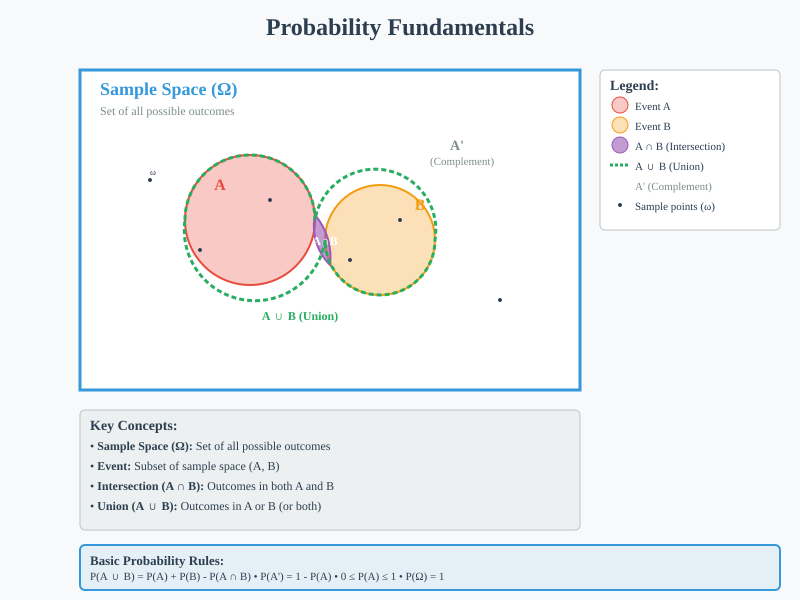
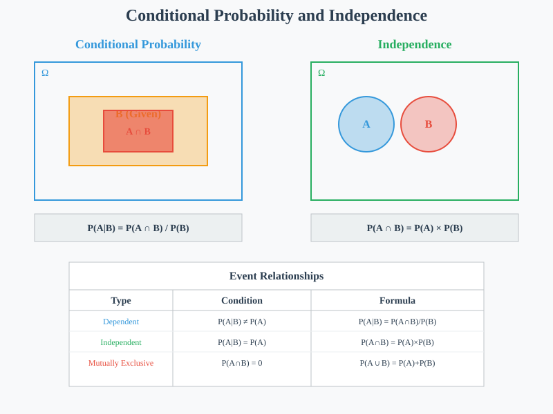
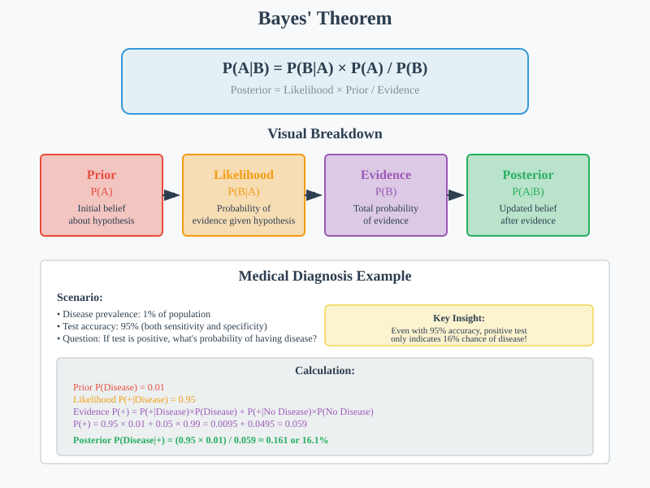
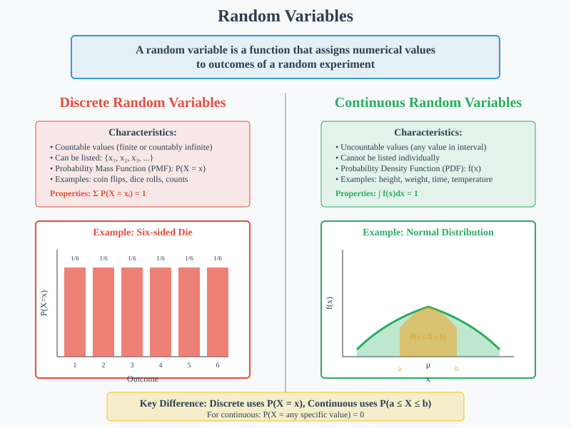
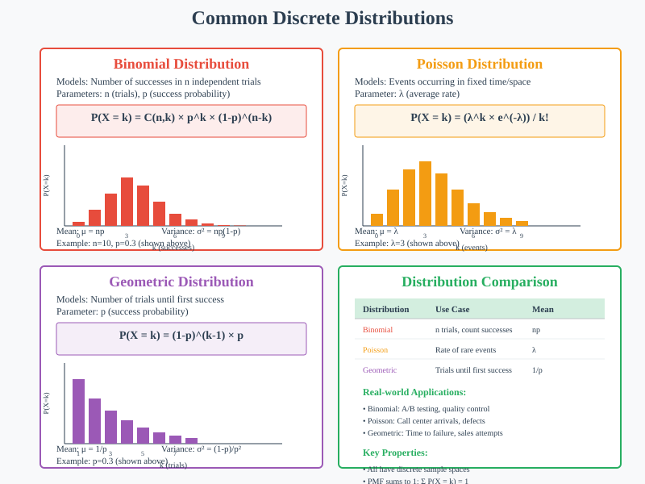
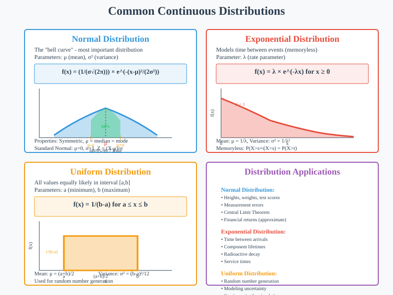
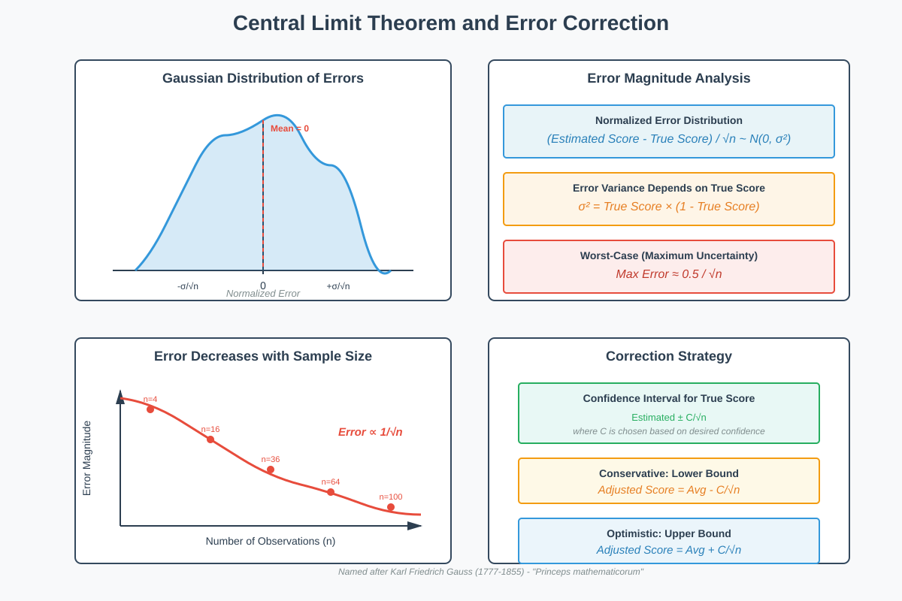

Probability & Distributions
📚 Quick Navigation
- Fundamental Probability Concepts
- Conditional Probability & Independence
- Bayes' Theorem
- Random Variables
- Discrete Distributions
- Continuous Distributions
- Central Limit Theorem
- Distribution Comparison
- Practical Applications
- Code Examples
- References & Further Reading
Fundamental Probability Concepts
Basic Definition:
Probability quantifies uncertainty and measures the likelihood of events occurring. Understanding probability is essential for data science, machine learning, and statistical inference.
Key Principles:
- Sample Space (Ω): The set of all possible outcomes of an experiment
- Event (A): A subset of the sample space
- Probability of Event A: P(A), where 0 ≤ P(A) ≤ 1
- Complement: P(A') = 1 - P(A)
Basic Probability Rules:
- Addition Rule: P(A ∪ B) = P(A) + P(B) - P(A ∩ B)
- Multiplication Rule: P(A ∩ B) = P(A) × P(B|A)
- Total Probability: P(A) = Σ P(A|Bi) × P(Bi)

Mathematical Foundation:
P(A ∪ B) = P(A) + P(B) - P(A ∩ B)
Where:
- A, B = events
- ∪ = union (OR)
- ∩ = intersection (AND)
Conditional Probability & Independence
Conditional Probability Definition:
The probability of event A occurring given that event B has occurred.
P(A|B) = P(A ∩ B) / P(B)
Where:
- P(A|B) = conditional probability of A given B
- P(A ∩ B) = probability of both A and B occurring
- P(B) = probability of B occurring (P(B) > 0)
Independence:
Two events A and B are independent if:
P(A|B) = P(A)
Equivalently:
P(A ∩ B) = P(A) × P(B)
Key Properties:
- Dependent Events: Knowledge of one event affects the probability of another
- Independent Events: Knowledge of one event doesn't affect the probability of another
- Mutually Exclusive: Events that cannot occur simultaneously, P(A ∩ B) = 0

Bayes' Theorem
Theorem Statement:
Bayes' theorem provides a way to update probabilities based on new evidence.
P(A|B) = [P(B|A) × P(A)] / P(B)
Extended Form:
P(A|B) = [P(B|A) × P(A)] / [P(B|A) × P(A) + P(B|A') × P(A')]
Where:
- P(A|B) = posterior probability (updated belief)
- P(B|A) = likelihood (evidence given hypothesis)
- P(A) = prior probability (initial belief)
- P(B) = marginal probability (total evidence)
Applications:
- Medical Diagnosis: Updating disease probability given test results
- Machine Learning: Naive Bayes classifiers
- Spam Filtering: Email classification
- A/B Testing: Updating conversion rate beliefs

Example Problem:
A medical test is 95% accurate for detecting a disease that affects 1% of the population. If someone tests positive, what's the probability they have the disease?
P(Disease|Positive) = [0.95 × 0.01] / [0.95 × 0.01 + 0.05 × 0.99] ≈ 0.161
Random Variables
Definition:
A random variable is a function that assigns numerical values to outcomes of a random experiment.
Types of Random Variables:
Discrete Random Variables
Characteristics:
- Countable values: Can be listed (finite or countably infinite)
- Probability Mass Function (PMF): P(X = x)
- Examples: Number of heads in coin flips, number of customers arriving
Properties:
- Σ P(X = xi) = 1 (probabilities sum to 1)
- P(X = xi) ≥ 0 for all i
Continuous Random Variables
Characteristics:
- Uncountable values: Can take any value in an interval
- Probability Density Function (PDF): f(x)
- Examples: Height, weight, temperature, time
Properties:
- ∫ f(x)dx = 1 (total area under curve equals 1)
- P(X = x) = 0 for any specific value x
- P(a ≤ X ≤ b) = ∫[a to b] f(x)dx

Expected Value and Variance:
Discrete:
E[X] = Σ xi × P(X = xi)
Var(X) = E[X²] - (E[X])²
Continuous:
E[X] = ∫ x × f(x)dx
Var(X) = ∫ x² × f(x)dx - (E[X])²
Discrete Distributions
Binomial Distribution
Description: Models the number of successes in n independent trials.
Parameters:
- n = number of trials
- p = probability of success on each trial
PMF:
P(X = k) = C(n,k) × p^k × (1-p)^(n-k)
Where:
- k = number of successes (0, 1, 2, ..., n)
- C(n,k) = binomial coefficient = n!/(k!(n-k)!)
Properties:
- E[X] = np
- Var(X) = np(1-p)
Poisson Distribution
Description: Models the number of events occurring in a fixed time interval.
Parameter:
- λ = average rate of occurrence
PMF:
P(X = k) = (λ^k × e^(-λ)) / k!
Properties:
- E[X] = λ
- Var(X) = λ
Geometric Distribution
Description: Models the number of trials until the first success.
Parameter:
- p = probability of success on each trial
PMF:
P(X = k) = (1-p)^(k-1) × p
Properties:
- E[X] = 1/p
- Var(X) = (1-p)/p²

Continuous Distributions
Normal Distribution
Description: The most important continuous distribution, bell-shaped and symmetric.
Parameters:
- μ = mean
- σ² = variance (σ = standard deviation)
PDF:
f(x) = (1/(σ√(2π))) × e^(-(x-μ)²/(2σ²))
Properties:
- E[X] = μ
- Var(X) = σ²
- Symmetric around μ
- 68-95-99.7 rule (empirical rule)
Standard Normal Distribution
Special case: μ = 0, σ = 1
Standardization:
Z = (X - μ) / σ
Exponential Distribution
Description: Models time between events in a Poisson process.
Parameter:
- λ = rate parameter
PDF:
f(x) = λ × e^(-λx) for x ≥ 0
Properties:
- E[X] = 1/λ
- Var(X) = 1/λ²
- Memoryless property
Uniform Distribution
Description: All values in an interval are equally likely.
Parameters:
- a = minimum value
- b = maximum value
PDF:
f(x) = 1/(b-a) for a ≤ x ≤ b
Properties:
- E[X] = (a+b)/2
- Var(X) = (b-a)²/12

Central Limit Theorem
Theorem Statement:
For a sufficiently large sample size n, the sampling distribution of the sample mean approaches a normal distribution, regardless of the original population distribution.
Mathematical Expression:
X̄ ~ N(μ, σ²/n)
Where:
- X̄ = sample mean
- μ = population mean
- σ² = population variance
- n = sample size
Key Points:
- Sample Size: Generally n ≥ 30 is considered sufficient
- Any Distribution: Works for any population distribution
- Practical Importance: Foundation for statistical inference
- Standard Error: σ/√n decreases as sample size increases
Standardized Form:
Z = (X̄ - μ) / (σ/√n)
Applications:
- Confidence Intervals: Estimating population parameters
- Hypothesis Testing: Testing claims about population means
- Quality Control: Monitoring process stability
- A/B Testing: Comparing treatment effects

Distribution Comparison
| Distribution | Type | Parameters | Mean | Variance | Use Cases |
|---|---|---|---|---|---|
| Binomial | Discrete | n, p | np | np(1-p) | Success counts in trials |
| Poisson | Discrete | λ | λ | λ | Rate of rare events |
| Geometric | Discrete | p | 1/p | (1-p)/p² | Trials until success |
| Normal | Continuous | μ, σ² | μ | σ² | Natural phenomena |
| Exponential | Continuous | λ | 1/λ | 1/λ² | Time between events |
| Uniform | Continuous | a, b | (a+b)/2 | (b-a)²/12 | Equal likelihood |
Distribution Selection Guide:
- Counting Events: Binomial, Poisson, Geometric
- Continuous Measurements: Normal, Exponential, Uniform
- Time Analysis: Exponential, Poisson
- Large Samples: Normal (CLT applies)
Practical Applications
Data Science Applications
Machine Learning:
- Naive Bayes Classifiers: Using Bayes' theorem for classification
- Probabilistic Models: Gaussian Mixture Models, Hidden Markov Models
- Uncertainty Quantification: Bayesian neural networks
A/B Testing:
- Conversion Rates: Binomial distribution for success/failure outcomes
- Statistical Significance: Normal distribution for large samples
- Bayesian A/B Testing: Updating beliefs with new data
Quality Control:
- Control Charts: Normal distribution for process monitoring
- Defect Rates: Poisson distribution for rare defects
- Reliability: Exponential distribution for failure times
Business Applications
Finance:
- Risk Assessment: Normal distribution for returns
- Option Pricing: Log-normal distribution for stock prices
- Credit Scoring: Logistic regression with probability outputs
Marketing:
- Customer Segmentation: Mixture models
- Campaign Effectiveness: Binomial models for conversion
- Lifetime Value: Exponential models for customer retention
Code Examples
Google Colab Integration

Python Implementation
import numpy as np
import matplotlib.pyplot as plt
from scipy import stats
import seaborn as sns
# Probability Distributions Examples
def plot_distributions():
fig, axes = plt.subplots(2, 3, figsize=(15, 10))
# Binomial Distribution
n, p = 20, 0.3
x_binom = np.arange(0, n+1)
y_binom = stats.binom.pmf(x_binom, n, p)
axes[0,0].bar(x_binom, y_binom)
axes[0,0].set_title('Binomial Distribution (n=20, p=0.3)')
# Normal Distribution
x_norm = np.linspace(-4, 4, 100)
y_norm = stats.norm.pdf(x_norm, 0, 1)
axes[0,1].plot(x_norm, y_norm)
axes[0,1].set_title('Standard Normal Distribution')
# Poisson Distribution
lam = 3
x_poisson = np.arange(0, 15)
y_poisson = stats.poisson.pmf(x_poisson, lam)
axes[0,2].bar(x_poisson, y_poisson)
axes[0,2].set_title('Poisson Distribution (λ=3)')
# Exponential Distribution
x_exp = np.linspace(0, 5, 100)
y_exp = stats.expon.pdf(x_exp, scale=1)
axes[1,0].plot(x_exp, y_exp)
axes[1,0].set_title('Exponential Distribution (λ=1)')
# Central Limit Theorem Demo
sample_means = []
for _ in range(1000):
sample = np.random.exponential(2, 30)
sample_means.append(np.mean(sample))
axes[1,1].hist(sample_means, bins=50, density=True, alpha=0.7)
axes[1,1].set_title('CLT: Sample Means of Exponential Distribution')
# Bayes' Theorem Example
prior = np.linspace(0, 1, 100)
likelihood = stats.beta.pdf(prior, 8, 4) # Beta as conjugate prior
axes[1,2].plot(prior, likelihood)
axes[1,2].set_title('Bayesian Update Example')
plt.tight_layout()
plt.show()
# Bayes' Theorem Implementation
def bayes_theorem(prior, likelihood_given_hypothesis, likelihood_given_not_hypothesis):
"""
Calculate posterior probability using Bayes' theorem
"""
marginal_likelihood = (likelihood_given_hypothesis * prior +
likelihood_given_not_hypothesis * (1 - prior))
posterior = (likelihood_given_hypothesis * prior) / marginal_likelihood
return posterior
# Example: Medical diagnosis
prior_disease = 0.01 # 1% prevalence
test_sensitivity = 0.95 # 95% true positive rate
test_specificity = 0.95 # 95% true negative rate
posterior_disease = bayes_theorem(
prior_disease,
test_sensitivity,
1 - test_specificity
)
print(f"Probability of disease given positive test: {posterior_disease:.3f}")
Statistical Inference Examples
# Confidence Interval for Mean
def confidence_interval_mean(data, confidence_level=0.95):
"""
Calculate confidence interval for population mean
"""
n = len(data)
mean = np.mean(data)
std_err = stats.sem(data) # Standard error of mean
# t-distribution for small samples
t_value = stats.t.ppf((1 + confidence_level) / 2, n - 1)
margin_error = t_value * std_err
ci_lower = mean - margin_error
ci_upper = mean + margin_error
return mean, (ci_lower, ci_upper)
# Hypothesis Testing Example
def one_sample_t_test(data, null_hypothesis_mean, alpha=0.05):
"""
Perform one-sample t-test
"""
t_statistic, p_value = stats.ttest_1samp(data, null_hypothesis_mean)
result = {
't_statistic': t_statistic,
'p_value': p_value,
'reject_null': p_value < alpha,
'conclusion': 'Reject H0' if p_value < alpha else 'Fail to reject H0'
}
return result
References & Further Reading
Essential Textbooks
- Introduction to Probability and Statistics - Mendenhall, Beaver, Beaver
- The Elements of Statistical Learning - Hastie, Tibshirani, Friedman
- Pattern Recognition and Machine Learning - Christopher Bishop
Research Papers
- A Tutorial on Probability Theory - ArXiv:physics/0606246
- Bayesian Statistics: A Review - ArXiv:1011.1304
- The Central Limit Theorem: A Survey - Statistical Science
Online Resources
- Khan Academy Statistics - Free comprehensive course
- 3Blue1Brown Probability - Visual explanations
- Seeing Theory - Interactive probability visualizations
Python Libraries
- SciPy Stats - Statistical functions and distributions
- Statsmodels - Statistical modeling
- PyMC - Bayesian statistical modeling
Hugging Face Models
- Bayesian Neural Networks - Uncertainty quantification models
- Probabilistic Transformers - Language models with probability outputs